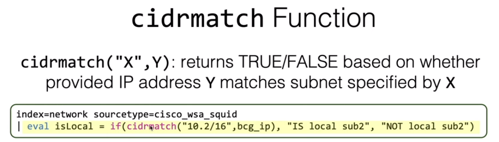
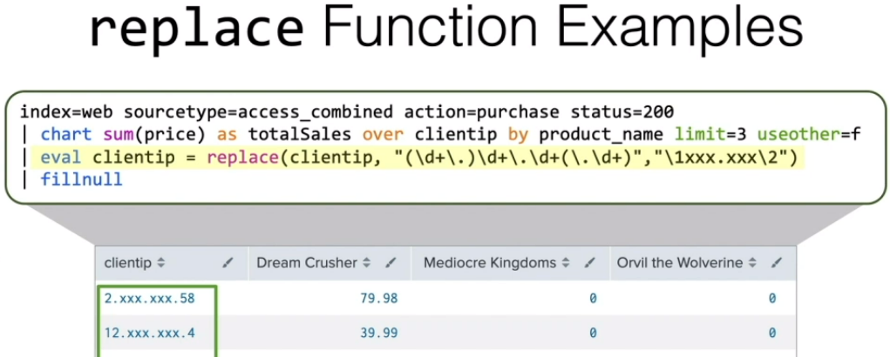

SPL memo
Tutorial¶
https://docs.splunk.com/Documentation/Splunk/9.0.1/SearchTutorial/WelcometotheSearchTutorial
非常有用¶
https://www.splunk.com/en_us/blog/security/hunting-with-splunk-the-basics.html
语法注意点¶
布尔运算符必须大写（AND，OR，NOT）¶
- 有优先度：小括号表达式>NOT>AND>OR
- 空格默认为AND
- 可用括号分组
- OR的列表表示：字段 IN (value1, value2, value3)
关于NOT 和 !=¶
- "NOT" 可以对搜索结果进行否定。搜索结果将返回不包含指定字段名、和值的事件。
- "!=" 用于在SPL中对字段进行比较（即默认了这个字段必须存在）
字段搜索（field_name=field_value）¶
- key区分大小写
- value不分大小写
urldecode()¶
内置URL解码
urldecode("url-string")urldecode(url-field)
[!NOTE] 不要在字段名称两边使用双引号
"。 尝试不带引号。如果这不起作用，请使用单引号'。
地理地图¶
| | iplocation |
|
| | geostats | |
| Choropleth maps 等值线图 |
| geom KMZ: compressed Keyhole Markup Language file。 |
lookup¶
用于在搜索时追加外部字段。 甚至有自动。
...| lookup <lookup-table-name> <lookup-field1> AS <field-on-searchResult> [output|outputnew filed2 filed3]
- 意思是：在指定的table中匹配
<lookup-field1>与搜索结果中的字段（由AS指定，本质为重命名）匹配，并追加匹配行的指定OUTPUT字段（不指定默认追加所有字段） <lookup-field1>：需要event和lookup表的字段同名- 匹配不到的将会赋值NULL
- output：覆盖已有字段
- outputnew：不覆盖
lookup调试¶
job检查里的 command.search.lookups。
CIDR lookup¶
[!NOTE] 其实有cidrmatch
index=dns
| rex field=src "(?<IP_OCTET123>^\d+\.\d+\.\d+)\.(?<IP_OCTET4>\d+$)"
| eval CIDR=if(IP_OCTET4<128, IP_OCTET123.".0", IP_OCTET123.".128")
| lookup infrasec_ip_lookup CIDR OUTPUT Company as src_Company
| stats count by src, src_Company
| makeresults
| eval ip="10.2.4.2,10.2.4.3"
| makemv delim="," ip
| mvexpand ip
| rex field=ip "(?<IP_OCTET123>^\d+\.\d+\.\d+)\.(?<IP_OCTET4>\d+$)"
| eval CIDR=if(IP_OCTET4<128, IP_OCTET123.".0", IP_OCTET123.".128")
| lookup infrasec_ip_lookup CIDR
| fields - *_*
| table ip, Company, Manager, "Management Area", "Management Section"
inputlookup¶
显示保存的lookup table¶
| inputlookup infrasec_ipaddress_lookup.csv
- 理解：将lookup的数据 input/导入 到splunk。
[!NOTE] 注意：别用
outputlookup，那是保存！！
subsearch¶
子搜索用方括号，会首先处理——可理解为子进程
- 默认1W行的结果上限（公司改到5w） ——> 各种限制（limits.conf）
- 默认1min的执行时间
- 注意：如果外部搜索在real-time执行，那么子搜索默认全时间搜索——所以可以限定时间来规避。另外，子搜索永远不会以real-time执行。
甚至可以用 NOT [subsearch] 的形式。子搜索的结果展开的话，其实就是用OR连接的各个键值对，然后用AND连接子搜索结果与外部搜索。
- 理解：可单拎出子搜索然后结尾加上
| format看看区别——将子搜索的结果用大量括号/OR/AND连接然后赋值给search字段。
优化¶
如果子搜索的结果非常大，用eval&stat组合更为效率（如下对比）
[search index=x sourcetype=xxx flag=1 | dedup user | fields user]| eval flag=if(sourcetype=xxx,1,0) | stats max(flag) as flag_1 by user | where flag_1=1 | sort user
经常运行的搜索/地方（schedule、dashboard）不建议使用子搜索。
“突破上限”¶
关键是多嵌套一个子搜索以获取指定目标。
index=ad_ja 10.1.4.* sourcetype=AD
| eval USR_ID=global_id
| stats count by AD_USERID USR_ID action
| join type=outer USR_ID
[ search index=ids earliest=-1d
[ search index=ad_ja 10.1.4.* sourcetype=AD earliest=-1mon@mon latest=@mon
| dedup global_id
| fields global_id
| rename global_id AS USR_ID]
]
| union¶
- union 命令可以组合两个或多个不同数据集的结果（数据模型、子搜索、查找和保存的搜索）。
- join 命令只能组合两个数据集。
return¶
相当于子搜索中fields命令的精细控制版本。
- 默认返回1条结果
- 可以用
$<field>仅返回value - 可以用
<alias>=<field>改变字段名
Transactions¶
| transaction (<field>|<field-list>) [options]
将不同源的数据聚集到一起并按照给定条件分组——将给定字段一样的值进行分组，如sessionID。其他字段变成多值（类似stats values()）。
transaction命令会添加2个字段到raw events：
- duration：transaction中第一个和最后一个event的秒数。
- eventcount：transaction中的event数。（搜索结果不展开的话默认显示5条）
[!NOTE] transaction默认是根据时间倒序来计算的 所以pipe到transaction之前，注意使用
| sort -_time。
keepevicted选项¶
keepevicted=0：默认，仅显示完成了的transaction。keepevicted=1：显示所有transaction
[!NOTE] evicted: 被驱逐的
判断Transactions是否完成¶
当设置keepevicted=1时，对于所有结果中“被驱逐的”transaction，其closed_txn字段：
- 0：未完成——即“被驱逐”的。
- 1：完成。
关于选项默认值¶
- maxspan：-1（无限制）
- maxpause：-1（无限制）
- maxevents：1000
[!NOTE] 注意（对比
stats）transaction默认具有1000的上限——即到达1000就会新开一个transaction。而stats无上限。
优化¶
transaction是resource intensive型命令。所以除了以下情况，尽量用更高效的stats 命令。
- 需要根据多个字段进行分组。
- 需要定义开始/结束或分段时间。
- 希望保留每条event与raw data的关联。
stats¶
[!NOTE] 踩坑：统计时注意event是否有目标字段 stats只会统计有目标字段的event。所以如果原event中某些event没有A字段，而BY子句又写了A字段，那么将只会统计有A字段的那部分event。即可能丢失一部分自己从搜索结果看到的内容。
^fc8c23
over理解为：“针对”、“对于xxx字段的每个值”。
over的值会显示在行，而by的值显示为列。那么其实over和by没有太大差别，仅仅是展示的效果——即over是x轴，而by表示对统计进行分组
使用over时只能指定一个by字段。 当不使用over直接by两个字段，则第一个字段被视为over。
eventstats（追加列——双重统计）¶
当我用过一次stats后，还想更进一步统计时，再加一个stats的话会生成一个新table覆盖前面的统计——所以，用eventstats的话能追加一列计算前面统计结果的统计（即保留原统计）。
streamstats（动态统计）¶
比eventstats控制得更精细——能统计指定条数的event，如移动平均。能统计每个event，如stats的count是每行的总数，而steamstats则可以计算multi数据。 且保留时间的时间顺序。
[!NOTE] 关键 动态计算每条event。如count时，每有一条event被使用，就count加一。即累积计算。
[!NOTE] 注意 仅运行这个命令是创建一个字段，不会转换为图表形式。
特殊选项：
- window：指定使用多少条event（包括当前+之前）。默认为0，即所有。
- current：默认为ture。即包含当前事件。
- global：true为跨越分组统计。
关于表结合¶
append（追加行）¶
根据字段名是否一致，呈现的结果会不同——即纵向or斜向结合
appendcols（追加列）¶
[!NOTE] 陷阱 如果搜索和子搜索以相同的顺序产生相同数量的结果，则可以安全地使用此命令。否则，您将得到误导性的结果。
appendpipe（追加行——双重统计）¶
相当于添加一个统计的子搜索到行尾——如果sort了又可以展现小计的效果。 （似乎splunk将行的值叫做label）
join¶
join [field] [type=] [search]：- 指定字段的话，默认是求集合（inner结合）
- 可以指定
type=outer（外部结合）——对于没有匹配到的，会添加null值的字段 [field]不存在的event将被忽略
Tabular output vs. Stats-like output¶
xyseries¶
| xyseries <x-field> <y-name-field> <y-data-field>
主要应用为突破timechart只能有两列的限制？——在stats+eval的统计后，加上时间会有3列。于是指定时间为x轴，另外两列分别为y轴名及其值。但是似乎可以将eval提到 timechart/stats 前就可避免3列的情况……但是！关于为什么要在 stats等命令后使用eval——因为这样的SPL更简单——且更关键的是：能更自由地交换 x/y 轴。
untalbe——xyseries的逆运算¶
xyseries vs. chart¶
…| chart A over B by C = …| stats A by B,C | …| xyseries B C A
foreach¶
foreach后指定要循环的字段（可用通配符）
开一个子搜索，里面用<<FIELD>> 调用被循环字段的值。
fillnull¶
...| fillnul [value=<string>] [<field-list>]
- 默认填充“0”
- 不限定字段的话填充所有null字段。
eval-functions详解¶
[!NOTE] 将无引号、单引号解释为字段，将双引号解释为值。注意：值是大小写敏感的！
调用eval-function的几种方式¶
You can use evaluation functions with the
eval,fieldformat, andwherecommands, and as part of eval expressions with other commands.
...| eval <field>=function(..)...| where function(..)...| fieldformat <field>=function(..)...| stats stats-func(eval(function(..)))
fieldformat¶
- 使用和eval一样的函数
- 仅更改值的显示，而不更改底层的值。
- 注意：格式化的值无法被用于其他命令，所以要晚于pipeline使用。
where¶
[!NOTE] 将无引号、单引号解释为字段，将双引号解释为值。注意：值是大小写敏感的！
[!NOTE] 为什么有where命令 比如search不支持两个字段间的比较，而where可以。
[!NOTE] 关于通配符
- 不要使用
*，因为会被解释为文字字符（literal character）或数学符号- 使用
LIKE操作符，或者like(<string>, <pattern>)函数- 使用
%（表示多个字符）或_（表示单个字符）
常见functions¶
{kind=link}
{kind=link}
Conversion类——字符串格式化¶
Text类——字符串处理¶
spath¶

- 最好都指定：input/output是指定字段，而path是指定路径
- 指定子路径/key用点或方括号（即字典/json，所以可以用点分形式，也可以用list['key']形式）
- 用大括号表示本来的列表。其结果提取为多值的字段——如果要分展开来就用mvexpand
eval函数形式更简单¶
... | eval locDesc=spath(_raw, "vendorProductSet.product.desc.locDesc")
substr¶
Comparison and Conditional functions¶
case¶
注意最后可能需要一个ture()来保证有值，否则默认NULL。
| spath input=Mitre path="{}.Code" output=MITRE_Code
| spath input=Mitre path="{}.Label" output=MITRE_Label
| eval MITRE=mvzip(MITRE_Code,MITRE_Label, ": ")
| eval MITRE=if(isnull(MITRE),"NULL",MITRE)
| eval MITRE_Label=if(isnull(MITRE_Label),"NULL",MITRE_Label)
| mvexpand MITRE_Label
| eval MITRE_Label_order = case(
like(MITRE_Label, "%Reconnaissance%"), 1,
like(MITRE_Label, "%Resource Development%"), 2,
like(MITRE_Label, "%Initial Access%"), 3,
like(MITRE_Label, "%Execution%"), 4,
like(MITRE_Label, "%Persistence%"), 5,
like(MITRE_Label, "%Privilege Escalation%"), 6,
like(MITRE_Label, "%Defense Evasion%"), 7,
like(MITRE_Label, "%Credential Access%"), 8,
like(MITRE_Label, "%Discovery%"), 9,
like(MITRE_Label, "%Lateral Movement%"), 10,
like(MITRE_Label, "%Collection%"), 11,
like(MITRE_Label, "%Command and Control%"), 12,
like(MITRE_Label, "%Exfiltration%"), 13,
like(MITRE_Label, "%Impact%"), 14,
true(), 15
)
| sort MITRE_Label_order
validate¶
case的反面，不匹配的话返回，匹配第一个条件则继续确认后面的条件。
in¶
[!NOTE] 必须在eval的
if或case函数中使用
如：...| eval error = if(in(status, "404", "503"), "true", "false")
各种Matching功能，返回TRUE/FALSE（多与if连用）¶
- searchmatch()
- cidrmatch()：判断指定字段是否匹配CIDR。 
- match()：正则匹配。
{kind=link}
replace¶
replace(<literal string/field>, <regex pattern>, <subsititution>)
下例，用\1或\2来捕获/传递regex中的分组使其保持原样，替换掉中间部分。

{kind=link}
coalesce：合并¶
对指定的（多个）字段中，返回第一个非null值。用于多种log（如多家厂商等）对同一含义的数据有不同字段名时，自己创建一个上层字段来吸收他们的字段名差异。
splunk正则¶
- regex：单纯作为过滤器。且“最小匹配？”——有pattern字符串的一段就算匹配【可能是因为指定了字段，所以hit就可】
- rex：正则提取字段，匹配后保存到某个字段
- erex：更简单，类似自动提取，只需给一个例子
[!NOTE] Splunk regular expressions are PCRE (Perl Compatible Regular Expressions)
URL提取FQDN¶
index=proxy_a
| rex field=url "^(?:(?:https?|tcp)://)?(?<FQDN>[^:/?#]+)(?::\d+)?\b(?:/|$)"
| dedup FQDN
| table FQDN
切片方式¶
index="proxy_c"
| eval url1=split(url,"/")
| eval url2=mvindex(url1,0)
| eval url3=split(url2,":")
| eval fqdn=mvindex(url3,0)
| stats count by fqdn
rest——conf确认¶
オンプレの環境：/opt/splunk/etc/apps/TA-recordedfuture/local/recordedfuture_settings.conf
splunk cloud の場合は以下 spl より確認：
| localop
| rest splunk_server=local /servicesNS/nobody/TA-recordedfuture/configs/conf-recordedfuture_settings/
对比URL：https://<tenant>.splunkcloud.com/ja-JP/app/TA-recordedfuture/rfes_enrich_ip
查看所有字段状况¶
个数、唯一数、值等。
查看index属于哪个datamodel¶
| datamodel
| rex field=_raw "\"modelName\"\s*\:\s*\"(?<modelName>[^\"]+)\""
| fields modelName
| table modelName
| map maxsearches=40 search="tstats `summariesonly` count from datamodel=$modelName$ by sourcetype,index | eval modelName=\"$modelName$\""
map¶
datamodel¶
执行无参数的命令 | datamodel：显示所有datamodel（json格式）。
其中，objectNameList里的就是dataset——即dataset是datamodel组成部分。每种dataset又有对应的tag标识（参考理解）
3种datasets：¶
- Events：不包含transforming命令和pipe的搜索
- Searches：包含pipe到transforming的搜索
- Transactions：包含transaction命令的搜索
GUI¶

注意（没懂）¶
- 前提：有event或search dataset。
- 并不会从永久data model加速中获益
Add Field¶
Auto-Extracted：只能在root dataset使用
Pivot¶
就是no-code可视化。
命令¶
| datamodel [<data_model_name>] [<dataset_name>] [<data_model_search_mode>] [strict_fields=<bool>] [allow_old_summaries=<bool>] [summariesonly=<bool>]
-
data_model_search_mode：
search|flat|acceleration_searchsearch：显示指定datamodel/dataset的所有event。并且每个字段在侧边栏会显示数据结构的从属关系。flat：与search相反，不会显示字段的从属关系。
-
summariesonly=t：仅搜索以TSIDX格式汇总的数据——即不搜索raw data - 也可以这样搜（结构如下，from方式好像主要用于相关search）：
| from datamodel Endpoint.Ports
时间范围指定¶
datamodel不可用earliest那种，需要 where relative_time()
relative_time¶
注意返回的是epoch time格式。
以下示例指定最早时间为 2 小时前对齐小时，最晚时间为 1 小时前对齐小时：
... | where _time>relative_time(now(), "-2h@h") AND _time<relative_time(now(), "-1h@h")
tstat¶
- 用于统计Tsidx文件的。如果Tsidx文件没有目标字段，搜索则不会返回结果。
- 使用from从特定data model拉取event。
- 使用where来过滤。
- 使用by来分组。
- 是Generating命令（需要前导管道符）。
- 使用注意：最好写上dataset的完整路径（无论datamodel还是字段）。
例：
... | tstats count where index=botsv2 by sourcetype
... | `tstats` count from datamodel=Authentication.Authentication where * () by _time,Authentication.action span=10m
| timechart minspan=10m useother=`useother` count by Authentication.action
| `drop_dm_object_name("Authentication")`
通配符¶
仅可在where子句中使用通配符搜索。
datamodel转tstat¶

stats变体¶
SPL memo#eventstats（追加列——双重统计） 和 SPL memo#streamstats（动态统计）¶
- 两者都是统计事件并给每个事件放入一个新字段
- 不过eventstats是静态，而streamstats是动态——即streamstats加入的新字段的统计值会根据统计事件的数目而变动/滑动
memo&例子¶
index="ad" sourcetype="ALOG_ACCESS_AD" action="LOGON-Failure"
| bin span=1h _time
| stats count as fail_count by user _time
| streamstats current=f window=1 last(fail_count) as prev_fail_count by user
| where fail_count > prev_fail_count*70 OR (fail_count > 20 AND prev_fail_count = 0)
| eval _time=strftime(_time,"%m-%d_%H:%M")
| sort _time
从splunk的conf看字段变换¶

bin¶
将连续的数值放入离散的集/容器中（timechart内置了span一样）
如：时间（按1小时间隔放置。即不管几分几秒，直接按小时的数分配）
| bin span=1h _timespan和_time可以互换位置- 还可以 as 新字段
不是只能bin时间字段！！
时间¶
范围指定¶
格式：%m/%d/%Y:%H:%M:%S
earliest=01/31/2023:00:00:00 latest=04/30/2023:00:00:00
[!NOTE] datamodel用不了这种形式
格式化¶
strftime¶
如果自己想指定时间，注意timestamp的单位需要是秒（即timestamp默认为毫秒，要除以1000）！
| eval _time=strftime(_time,"%m-%d_%H:%M")| fieldformat _time=strftime(_time,"%Y-%m-%dT%H:%M:%S.%l%z")%T就是：%H:%M:%S%F就是：%Y-%m-%d（ISO8601格式）- 注意：计算字段的值别忘了用单引号括住！
strptime(<time_field>, <the_time_format>)¶
是将指定格式的时间转为 epoch time格式。
同比环比¶
index IN("ad_g") sourcetype=ALOG earliest=-0d@d latest=now | eval flag_date="Today"
| append [search index IN("ad_g") sourcetype=ALOG earliest=-7d@d latest=-6d@d | eval flag_date="Last week" | eval _time=_time+86400*7]
| timechart span=1d count by flag_date
timewrap [<int>] <timescale>¶
一般跟随在 timechart 结果后。
mv相关¶
很多时候mv函数的参数都有个表达式——因为mv是list数据，所以mv函数的意图是迭代处理。
…| eval failure_user_count=mvcount(mvfilter(match(v_ua, "-Failure")))…| eval v_normal_error_uni = mvdedup(mvmap(v_uat , replace(v_uat, "WRITE_", "READ_")))
字符串处理¶
tostring(field, "commas")
计算带宽（Bytes）单位¶
...
| eval bytes = if(isnull(bytes), "n/a", bytes)
| eval size = case(
bytes >= pow(1024, 3), round(bytes / pow(1024, 3), 2) . " GB",
bytes >= pow(1024, 2), round(bytes / pow(1024, 2), 2) . " MB",
bytes >= 1024, round(bytes / 1024, 2) . " KB",
true(), bytes . " B"
)